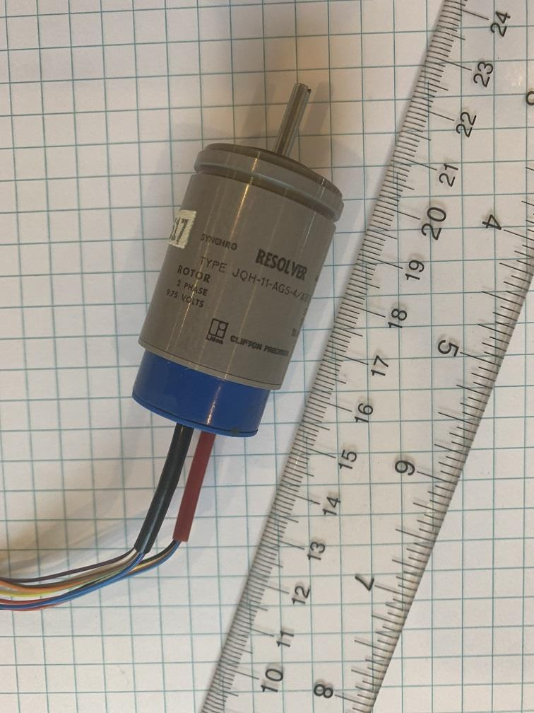

Unveiling the Resolver Enigma. Using black box method for understanding resolver and decoding shaft position. Part 1
Resolver is a type of rotary transformer which is used for measuring rotation angle of a shaft. Resolvers give analog output in form of phase shift between sinusoidal signals, so the output signal must be converted into digital form if we want to use them with digital control systems.
In most modern applications another type of sensor, encoders, are usual "go to" solution for measuring shaft position and velocity: they are inherently digital which makes it easy to integrate them in modern control systems, they have higher accuracy and precision then resolvers and they can cost fraction of equivalent resolver.
Nevertheless resolvers are still applicable: they can operate in harsh environments such as extreme temperatures, shock/vibration and ionizing radiation. Resolvers has been around for longer time so they can be found in old equipment.
Although resolver-to-digital converter ICs exist, we will rely on a sound card and programmatic approach in order to read the shaft angle from a resolver and will have some fun along the way. In Part 1 we will use a personal computer sound card along with a bunch of simple tools for understending the pinout, generating required exitation signals, reading the output and write the code which will extract shaft angle from the output signal using PortAdio, a popular C library for audio.
To begin I purchased a resolver with the labeling "JQH-11-AGS-4/A386" on eBay.
Quick internet search didn't give me any datasheets or documentation, so let's try blackbox approach. The labeling on the encoder says: ROTOR 2 PHASE 9.75 VOLTS and STATOR 2 PHASE 10.1 VOLTS, so most probably we have two windings at \(90^\circ\) on the stator at and two windings at \(90^\circ\) on the rotor. What we need to do is to provide reference \(\sin\left(\omega t\right)\) and \(\cos\left(\omega t\right)\) signals to the stator and read \(\sin\left(\omega t + \alpha\right)\) and \(\cos\left(\omega t + \alpha\right)\) output signals from the rotor, where \(\alpha\) is the shaft rotation angle, \(\omega = 2\pi f\), where frequency \(f\) is 400Hz (which is also labeled on the encoder).
The resolver has two bundles of wires coming out of it. Most probably one of the bundles corresponds to rotor windings, and another goes to the stator inside. What puzzles me though is that one of the bundles have 4 wires and another bundle has 8. The 4-wires bundle has red, black, yellow and blue wires, the 8-wires bundle has red, yellow, white, blue, green, purple, brown and orange wires. It turns out that there are color standards for the resolver wires, although 8-wires bundle colors don't match any color code scheme I could find.
The first thing we can do is to measure resistance between different pair of wires, so we can find wires corresponding to the individual windings. It would be interesting to find out which windings are on the rotor and which are on the stator. In order to check this I decided to bring permanent magnets to the resolver and spin the shaft. In this case the windings on the rotor will work as alternator winding and generate alternating voltage on the wires corresponding to the rotor, while stator's wires shouldn't have any voltage.
I used Dremel tool and two neodym magnets for this test
Here are the results:
4-wire bundle
Wire Pair |
Generates voltage when shaft spins |
Resistance (Ohm) |
|---|---|---|
Red-Black |
Yes |
315 |
Yellow-Blue |
Yes |
319 |
8-wire bundle
Wire Pair |
Generates voltage when shaft spins |
Resistance (Ohm) |
|---|---|---|
Red-Yellow |
No |
313 |
White-Blue |
No |
472 |
Green-Purple |
No |
313 |
Brown-Orange |
No |
471 |
Once we figure out which wire corresponds to which winding we can come up with a wiring scheme: we will feed the stator winding with two signals having \(90^\circ\) phase shift between them, so the winding will generate rotating magnetic field inside the resolver. The rotor winding will generate sinusoidal voltage which will have phase shift relative to the stator's voltage. The phase shift will correspond to the shaft angle \(\phi\).
We will use left and right audio channels of the sound card to generate two \(90^\circ\) shifted reference signals. We will use two channels of the LINE IN: one channel will be used to read the reference signal and another channel will be used to read the output signal from one of the rotating winding. So will use the following wiring scheme:

Having both reference and output signals helps us to compensate for the unkown phase shift introduced by the sound card circuitry.
Here is video of the test run of the setup:
In order to measure the shaft angle we convolve the output signal from rotor with the reference signals:
Using
and
we can obtain the following relationships between \(A, B\) and \(\phi\):
Since we are creating a software implementation, we operate in discrete time domain, so we use the discrete counterparts of the formulas above:
This computation is peformed for both reference and output signals, so we get reference angled \(\phi_{ref}\) and output angle \(\phi_{out}\). The shaft angle is then \(\phi = \phi_{out} - \phi_{ref}\).
It is easier if each period corresponds to exact number of samples, so we adjust the frequency slightly: we will use 400.909Hz instead of 400Hz. This way we will have 110 samples per period at 44100 samples per second. \(N\) is the number of samples in the signal, must be exact multiple of period.
The source code available on GitHub:.
Here is the video of the final test run: